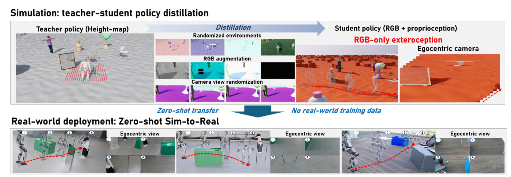
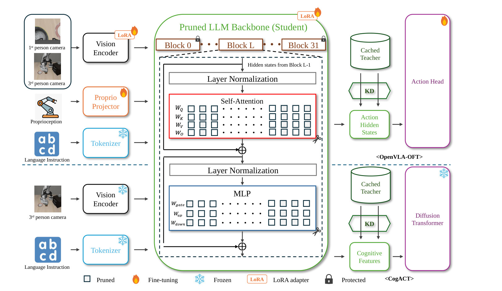
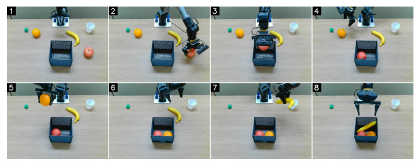
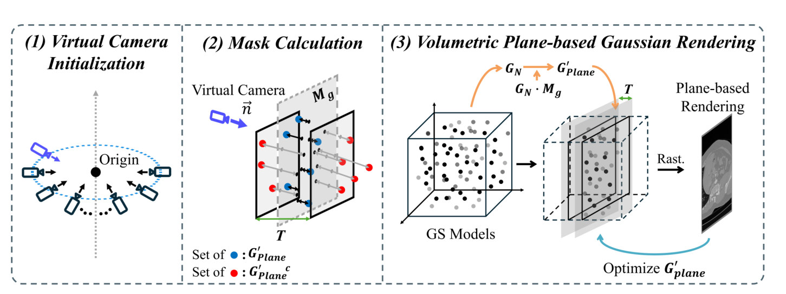
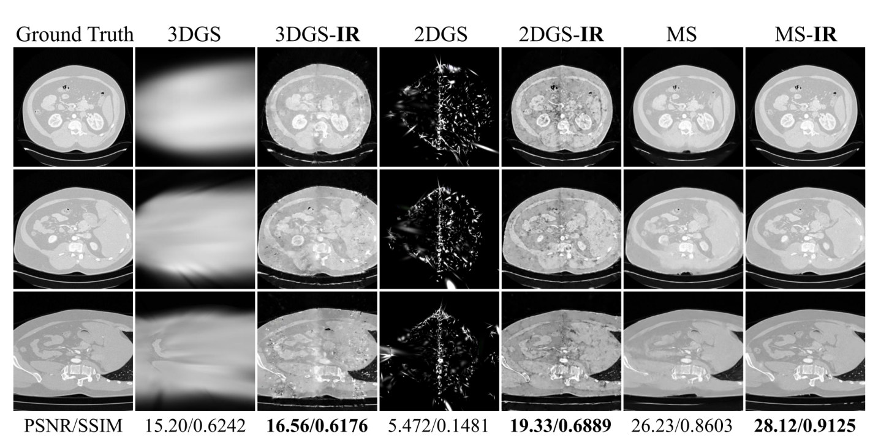
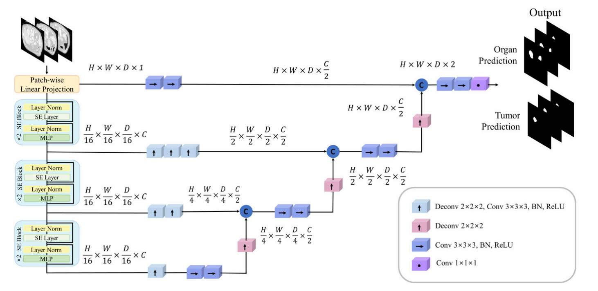
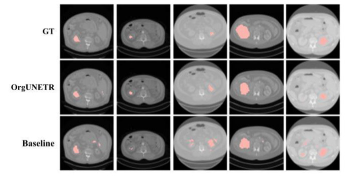

Geometry-First Visual Distillation for Zero-Shot Humanoid Obstacle Avoidance
기하 정보로 학습한 장애물 인지 보행 정책을 RGB 시각 정책으로 증류해, 실제 데이터 없이 Unitree G1이 시각 입력만으로 장애물을 피해 걷도록 했습니다.


AI Researcher · 3D Vision · Multimodal AI · Efficient Adaptation · Physical AI
기존 모델을 새로운 데이터에 적용할 때 발생하는 문제를 분석하고, 필요한 경우 학습 구조나 데이터 처리 방식을 수정하는 연구를 해 왔습니다. 최근에는 VLA 모델을 경량화해 6축 로봇 팔에서 검증했고, 휴머노이드 Unitree G1의 시각 기반 장애물 회피 보행 실험을 함께 수행했습니다.
논문 Figure로 보는 주요 연구
기하 정보로 학습한 장애물 인지 보행 정책을 RGB 시각 정책으로 증류해, 실제 데이터 없이 Unitree G1이 시각 입력만으로 장애물을 피해 걷도록 했습니다.

구조적 pruning으로 크게 줄인 VLA를 교사의 hidden state 증류로 약 8 GPU시간 만에 복구하고, 72% 압축 모델을 실제 로봇 팔에서 교사보다 2.23배 빠르게 구동했습니다.


평면 근방의 Gaussian만 골라 렌더링·학습해, 표면 위주로 설계된 3DGS 계열 모델이 CT/MRI 볼륨의 내부 단면을 새로운 위치와 각도에서 합성하도록 했습니다.


장기와 종양을 함께 예측하고 self-attention을 SE 블록으로 바꿔, UNETR 대비 종양 Dice를 KiTS19에서 40.86%, Prostate158에서 32.69% 높이고 연산 비용을 13.9% 줄였습니다.


최신순
연구 내용: 장애물이 많은 환경에서 휴머노이드가 균형을 유지하며 이동하려면 보행과 장애물 회피를 함께 고려해야 합니다. RGB 영상으로 바로 강화학습을 하면 보행·장애물 회피·시각 grounding이 한 최적화에 얽히고, 탐색 내내 영상을 렌더링해야 해 비용이 큽니다. 기하 정보(geometry)를 먼저 학습한 장애물 인지 보행 정책을 교사로 두고 이를 시각 정책으로 증류하는 geometry-first 방식을 설계해, 시각 입력만으로 추가 학습 없이(zero-shot) 장애물을 피하는 보행을 Unitree G1 실기에서 검증했습니다. 저는 모델 파이프라인 구현, 실로봇 실험 설계·평가, 논문 그림 제작을 맡았습니다.
확보한 기술: 휴머노이드 보행 정책의 시뮬레이션–실기 전이, 교사–학생 시각 증류 설계, 실로봇 실험 운영.
연구 내용: VLA 모델의 언어 백본을 구조적 pruning으로 63% 줄이면 시뮬레이션 벤치마크(LIBERO-Long) 성공률이 거의 0으로 무너지고, 기존 복구 방법은 강화학습 롤아웃에 수백 GPU시간이 필요했습니다. 폭(width) pruning이 residual stream 크기를 유지한다는 점을 이용해 교사·학생의 hidden state를 projector 없이 직접 맞추는 오프라인 증류로 바꾸고, 교사를 한 번 통과시킨 캐시만으로 약 8 GPU시간 안에 성공률을 교사 수준 근처로 복구했습니다. 9개 압축 비율·두 백본에서 증류가 효과를 내는 지점을 찾고, 6축 로봇팔 실기에서는 72% 압축 모델이 교사보다 2.23배 빠르고 메모리를 62% 적게 쓰는 것을 확인했습니다.
확보한 기술: 구조적 pruning 후 hidden-state 증류 학습 구현, 압축 비율별 성공률·지연시간 측정, 로봇 팔 온보드 배포와 실기 평가.
활용 가능성: 연산·메모리가 제한된 로봇과 온디바이스 기기에 대형 멀티모달 모델을 올리는 작업.
연구 내용: 사전학습 비전 모델을 다른 과제에 적용할 때 각 층의 feature가 얼마나 전이되는지를 정량화한 ‘전이성 프로파일’을 만들고, 이를 바탕으로 동결할 층과 다시 학습할 층을 선택하는 방법을 연구했습니다.
확보한 기술: 층별 전이성 측정 실험 설계와 분석, 부분 동결·parameter-efficient 학습 범위 결정.
연구 내용: 3–7B 규모 VLA는 GPU 메모리를 20 GB 이상 요구해 소형 로봇에 올리기 어렵고, 크기만 줄이면 언어 지시나 시각 교란에 대한 강건성이 떨어집니다. 이 연구에서는 35B 교사 모델이 만든 계획(Plan)·추론(Think) 라벨을 Qwen3.5-0.8B 기반 0.9B 학생 모델에 증류해, 학생이 행동(Action)을 내기 전에 계획과 추론을 먼저 출력하도록 학습했습니다. 입력은 3인칭·손목 카메라의 8프레임 이력과 로봇 관절 상태(proprioception), 지시문으로 구성했습니다. LIBERO-Plus 4개 suite에서 7B baseline 대비 각각 +4.7, +2.8, +15.9, +3.0점을 기록했고, 추론 메모리는 2.25 GB입니다. 저는 멀티모달 학습 파이프라인 구성과 로봇 조작 성능 평가를 공동으로 맡았습니다.
확보한 기술: 시각·언어·행동 멀티모달 학습 파이프라인 구성, Chain-of-Thought 증류 학습, 로봇 조작 실험 설계.
연구 내용: 아래 CVPR 2026 Workshop 논문을 확장한 저널판입니다. CVPR Workshop 논문에서 추가적인 Ablation Study도 수행하고 추가했습니다.
연구 내용: 3DGS·2DGS·Mip-Splatting은 표면 위주의 일반적인 Scene을 기준으로 설계되어, CT/MRI 볼륨에 그대로 적용하면 외부 Gaussian만이 학습하게 되고 내부 구조가 표현되지 않았습니다. 정의된 내부 평면 근방의 Gaussian만 선택적으로 렌더링·학습하는 plane-based 방식을 설계해, 내부 단면을 새로운 위치와 각도에서 합성할 수 있게 했습니다. 세 backbone과 두 데이터셋(KiTS23·IXI) 모두에서 PSNR·SSIM이 개선되었고 재현 코드를 공개했습니다.
확보한 기술: 3DGS 학습·렌더링 파이프라인 수정, 3D 볼륨용 데이터셋·카메라 궤적 구성, PSNR/SSIM/LPIPS 평가 체계 구축.
활용 가능성: 멀티뷰 영상으로 3D Scene을 재구성(3D Reconstruction)하고 새로운 시점의 영상을 합성(Novel-View Synthesis)하는 3D Vision 전반. 로봇 작업 공간의 3D 복원, 내부 구조까지 재구성해야 하는 3D 모델 구축.
연구 내용: 3DGS는 카메라 영상의 SfM 알고리즘을 이용해 point cloud로 Gaussian들의 초기 위치를 잡는데, CT 볼륨에는 point cloud가 없어 학습을 시작할 수 없었습니다. 큐브 기반 NeRF를 먼저 학습해 밀도장에서 점을 샘플링하고 이를 초기 위치로 사용해, NeRF보다 빠르게 학습되고 실시간으로 렌더링되는 CT의 3DGS 표현을 만들었습니다. CVPR 2026 Workshop, IEEE Access 2026 선행연구
확보한 기술: 큐브 기반 NeRF 학습과 밀도장 점 샘플링 구현, CT 볼륨을 3DGS 학습 데이터로 바꾸는 전처리 파이프라인 구축.
S. Kim, S. R. Choi, S. J. Baek, C. Gu, D. Hwang, and M. Lee. “Adaptive Consensus Kernel Clustering for Manifold-Structured Data.” ICUFN, 2025.
연구 내용: 종양은 CT에서 차지하는 부피에 비해 매우 작아 바로 찾으면 놓치거나 오탐이 많았고, UNETR의 self-attention은 3D 볼륨에서 연산량이 컸습니다. 종양이 항상 특정 장기 안에 있다는 점을 이용해 장기 위치 정보를 함께 학습하고 self-attention을 Squeeze-and-Excitation 블록으로 대체해, baseline 모델인 UNETR에 비해 KiTS19(신장 종양)·Prostate158(전립선 종양)의 Dice를 각각 40.86%, 32.69%(상대 향상) 높이고 연산 비용을 13.9% 줄였습니다.
확보한 기술: 3D 분할 모델 구조 설계, 장기–종양 관계를 출력과 손실 함수에 반영, self-attention을 SE 블록으로 대체한 연산량 절감.
S. R. Choi, K. Ko, S. J. Baek, S. Lee, J. Lee, and M. Lee. “Enhanced Kidney Tumor Segmentation in CT Scans Using a Simplified UNETR with Organ Information.” ICAIIC, 2024. OrgUNETR 선행 연구
연구 내용: 유전체 분석에 활용된 Transformer와 attention 구조를 긴 서열·고차원 희소 데이터·다중 오믹스 같은 데이터 특성과 연구 과제별로 분류하고, 각 방법의 장단점을 비교한 리뷰 논문입니다.
확보한 기술: Transformer·attention 관련 문헌 조사와 분류 체계 설계.
연구 내용: 유전체 데이터는 샘플 수보다 유전자 수가 압도적으로 많아 쉽게 과적합되고, 예측이 맞아도 어떤 유전자가 영향이 큰 지를 설명하기 어려웠습니다. mRNA·miRNA 발현과 임상 정보를 함께 쓰는 멀티모달 구조에 유전자 단위 attention을 넣어 예후 예측 성능을 높이고, attention 가중치로 예후와 관련성이 높은 유전자를 분석했습니다.
확보한 기술: mRNA·miRNA·임상 변수를 결합하는 멀티모달 모델 구현, 고차원·소표본 데이터의 과적합 제어, attention 가중치를 이용한 유전자 중요도 분석.
S. R. Choi, H. Ku, and M. Lee. “Attention-Based Residual Deep Learning for Low-Grade Glioma Survival Prediction Using mRNA and miRNA Expression Dataset.” 한국통신학회 동계종합학술발표회, pp. 800–801, 2022.